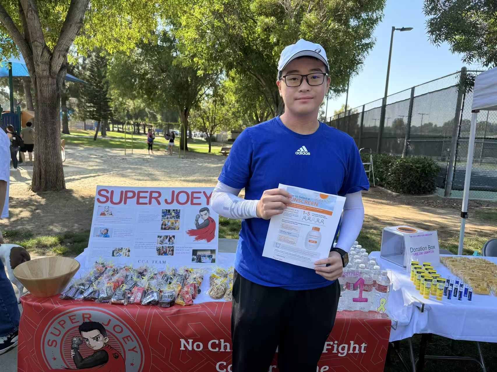
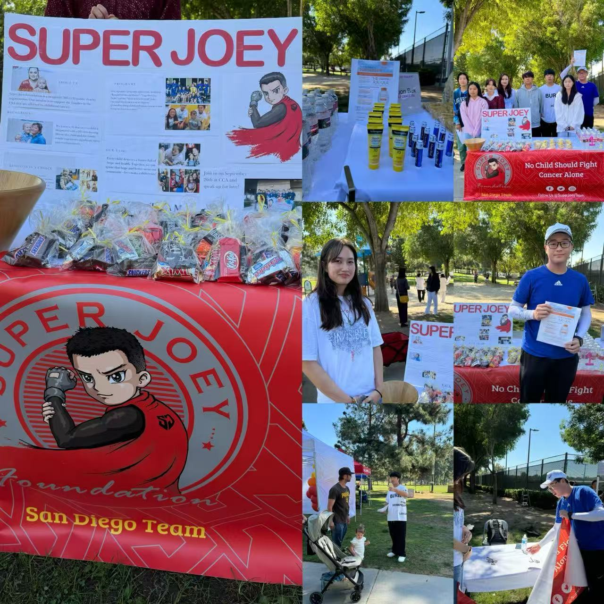
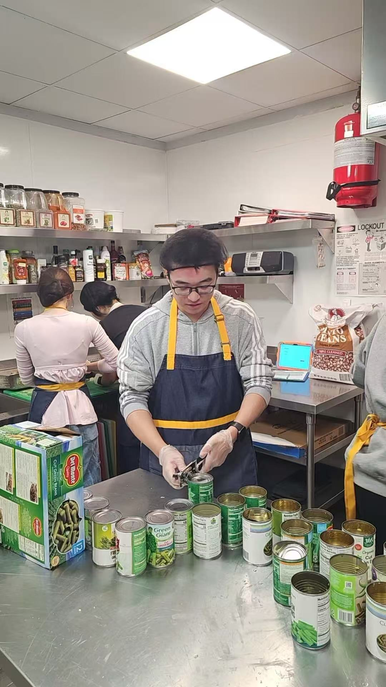
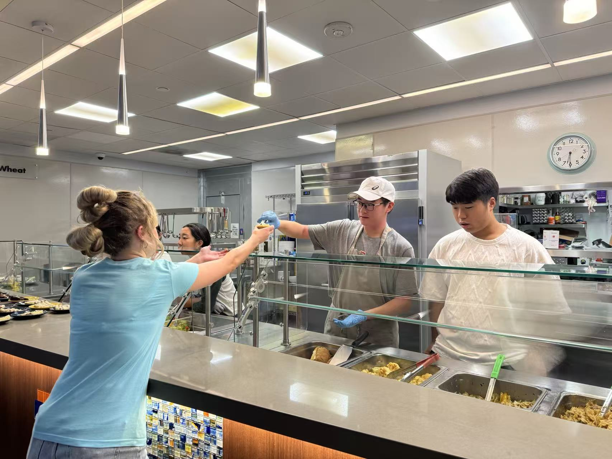
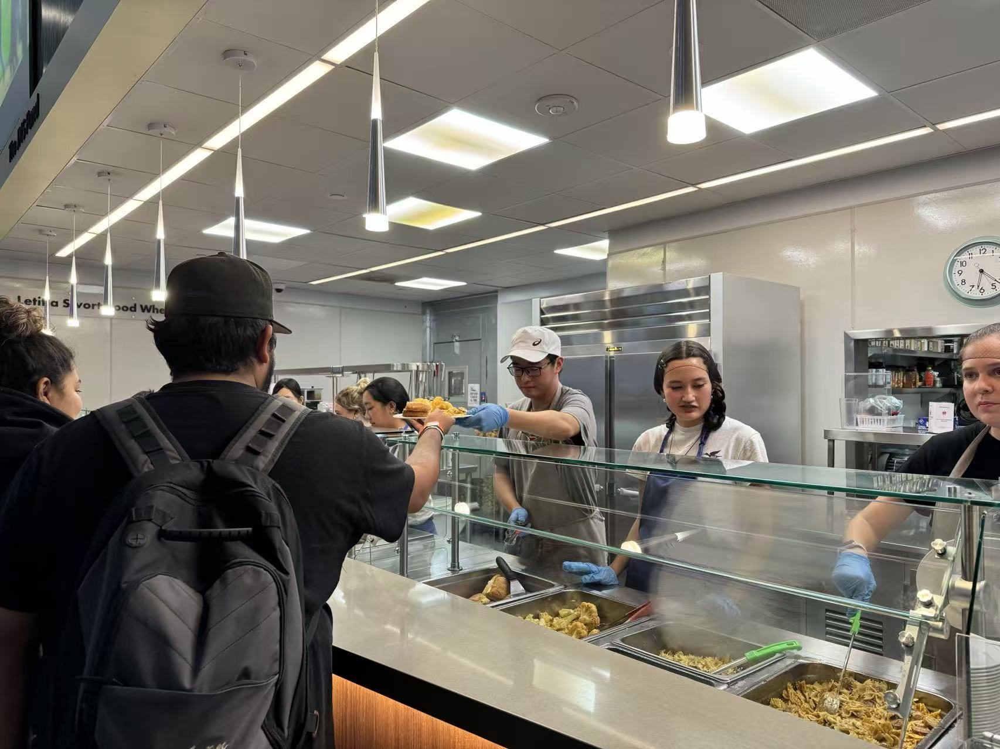
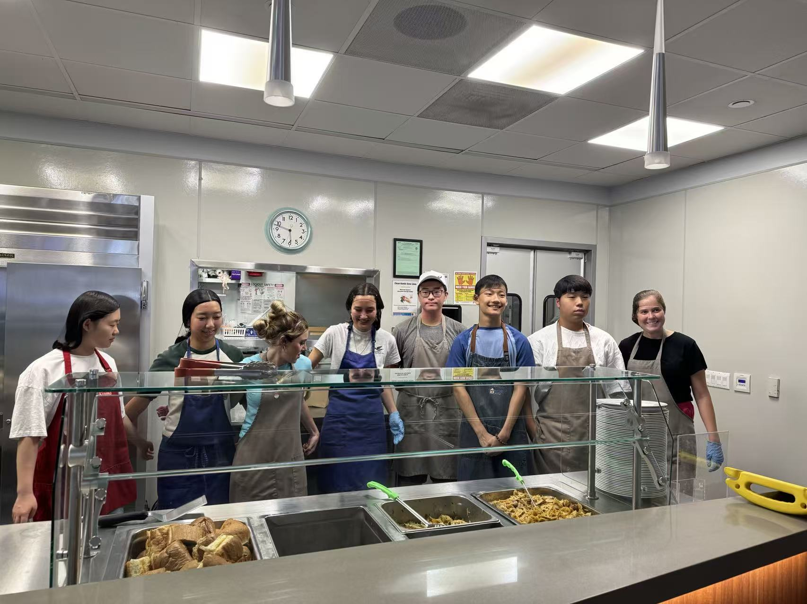
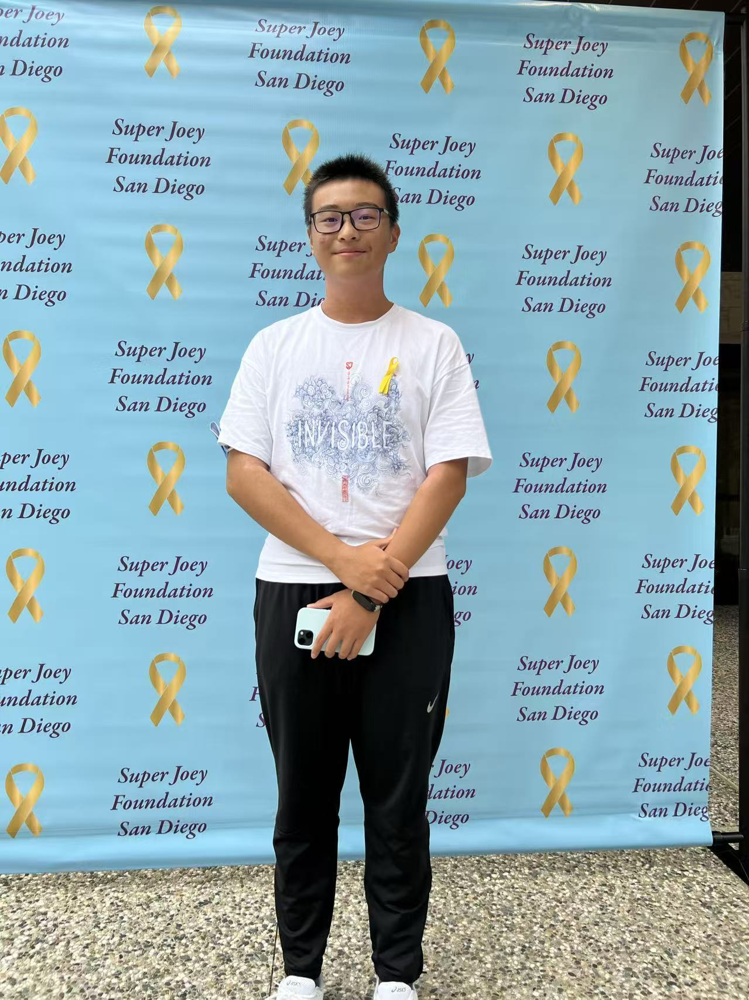
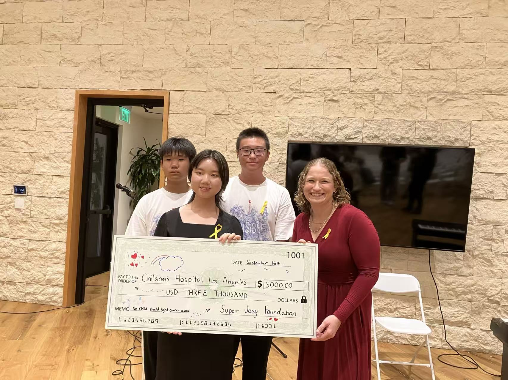

02 / COMMUNITY
My work with
Super Joey.
I joined Super Joey in eighth grade. Since then, I’ve helped with fundraising, prepared meals at Ronald McDonald House, and organized sun-safety outreach.

01 / SUN SAFETY & OUTREACH
Talking about
sun protection.
I organized a sun-protection outreach activity with fellow volunteers, sharing practical information and inviting community members to stop, ask questions, and learn about Super Joey.
Sun-safety event photographs2 photos＋



02 / RONALD MCDONALD HOUSE
Preparing and
serving meals.
At Ronald McDonald House, I prepared and served meals with other volunteers for families with children receiving medical care. I helped in the kitchen and at the serving counter.
Kitchen and meal-service photographs4 photos＋








03 / FUNDRAISING & CONTINUITY
From eighth grade
to club leadership.
I began participating in Super Joey fundraising in eighth grade. Over time, I took on more responsibility, helping organize activities and bring other students into the work.
Our fundraising supported Children’s Hospital Los Angeles. The check presentation records a $3,000 contribution—a result made possible by a group of volunteers and supporters.




KEEP EXPLORING
Engineering starts with listening.
See how questions about everyday skin care developed into SkinGuard.